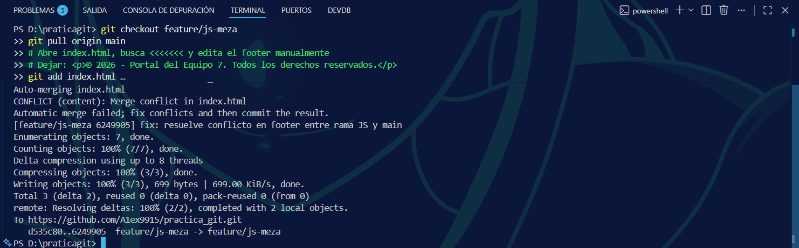
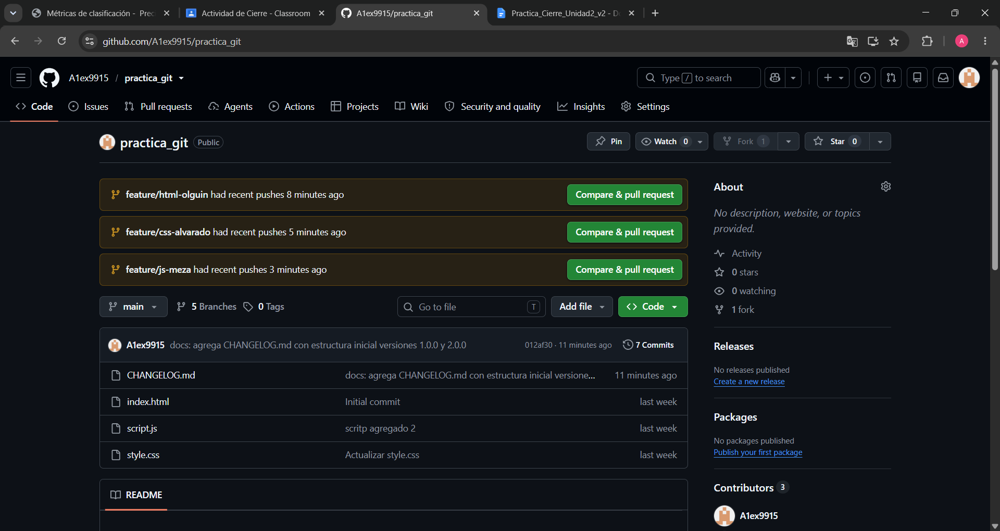
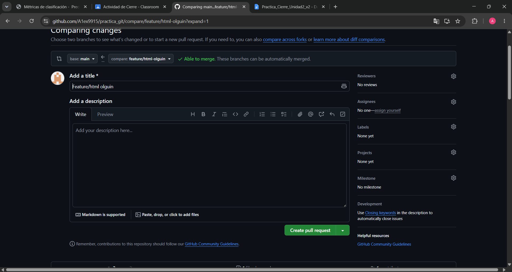

Flujo de Trabajo Git
Estrategia de ramas (GitHub Flow)
El equipo siguió el flujo GitHub Flow: cada integrante creó una rama
feature/[rol]-[apellido] desde main, realizó sus commits con
Conventional Commits y abrió un Pull Request con el Líder como revisor.
Los merges se hicieron en orden: HTML → CSS → JS.
Diagrama de ramas y merges
main ● 60d057f Initial commit
│
● 012af30 docs: agrega CHANGELOG.md (Líder)
│╲
feat/html-olguin │ ● 370ea9a feat: agrega sección portafolio
│ ● a7803e5 feat: agrega formulario de contacto
│ ● 67fb8ee fix: corrige accesibilidad en imágenes
│╱ 343cf1d Merge PR #3 ← HTML
│╲
feat/css-alvarado │ ● f580e75 style: variables CSS en :root
│ ● 9a750d8 style: media queries tablet/móvil
│ ● 7b586a5 style: transiciones hover portafolio
│ ● d0620e7 style: estilos formulario contacto
│╱ 02fda67 Merge PR #4 ← CSS
│╲
feat/js-meza │ ● ed7e271 feat: validación campos vacíos
│ ● 2437c96 feat: validación email con regex
│ ● 37c9fb4 feat: localStorage mensajes
│ ● d535c80 feat: bonus mensajes + ⚠️ conflicto footer
│ ● d60cfdb fix: resuelve conflicto footer JS↔main
│╱ 5b73506 Merge PR #5 ← JS
●
main [HEAD] ≥ 29 commits en total
Orden de merges de los Pull Requests
| # | PR | Rama origen | Resultado |
|---|
| PR #3 | [HTML] Sección portafolio y formulario | feature/html-olguin | Merge limpio |
| PR #4 | [CSS] Variables, media queries y transiciones | feature/css-alvarado | Merge limpio |
| PR #5 | [JS] Validación y localStorage | feature/js-meza | Conflicto resuelto |
Resolución del conflicto simulado
Causa: El integrante JS modificó el <footer> en su rama, pero
main ya tenía una versión diferente del footer después del merge de HTML.
Git no pudo resolver automáticamente la diferencia de texto.
Los marcadores de conflicto encontrados en index.html:
<<<<<<< HEAD (main)
<p>© 2026 Equipo 7 | Página de presentación...</p>
=======
<p>© 2026 - Portal del Equipo 7. Todos los derechos reservados.</p>
>>>>>>> feature/js-meza
El Líder (Alex) y el integrante JS resolvieron juntos el conflicto editando manualmente
el archivo, eliminando los marcadores y conservando la versión del PR de JS.
Se confirmó la resolución con el commit:
fix: resuelve conflicto en footer entre rama JS y main.

Captura real — Terminal: git pull origin main → CONFLICT detectado → commit de resolución → git push
Evidencia Técnica
Sitio en desktop (pantalla completa)
📸 Insertar captura: abrir index.html en el navegador en pantalla completa
(mostrar las secciones: Hero, Equipo, Portafolio, Contacto)
Sitio en vista móvil (DevTools)
📸 Insertar captura: F12 → Toggle device toolbar → iPhone o 375px de ancho
(verificar que las tarjetas se apilen en 1 columna)
Formulario validando campos
📸 Formulario con error:
intentar enviar con campos vacíos
(mensaje: "Por favor completa todos los campos.")
📸 Formulario con éxito:
llenar campos y enviar correctamente
(mensaje: "¡Mensaje enviado correctamente! ✅")
localStorage en DevTools
📸 Insertar captura: F12 → Application → Storage → Local Storage → localhost
(debe verse la clave mensajes-contacto con el JSON del mensaje enviado)
Funcionalidades implementadas
| Rol | Funcionalidad | Archivo | Estado |
|---|
| HTML | Sección portafolio con 3 tarjetas semánticas | index.html | ✅ Completo |
| HTML | Formulario de contacto accesible | index.html | ✅ Completo |
| CSS | Variables CSS en :root | style.css | ✅ Completo |
| CSS | Media queries tablet (768px) y móvil (480px) | style.css | ✅ Completo |
| CSS | Transiciones hover y efectos focus en form | style.css | ✅ Completo |
| JS | Validación de campos vacíos + regex email | script.js | ✅ Completo |
| JS | Guardar mensajes en localStorage | script.js | ✅ Completo |
| JS | Bonus: mostrar mensajes en div dinámico | script.js | ✅ +0.5 pts |
Evidencia Git
Historial de commits — git log --oneline --graph --all
.png)
.png)
.png)
.png)
.png)
Historial completo — 29 commits con ramas feature/html-olguin, feature/css-alvarado y feature/js-meza
Commits por integrante
| Integrante | Commits principales | Convención |
|---|
Alex Alvarado
@A1ex9915 |
docs: CHANGELOG.md · docs: README + docs/
style: variables CSS · style: media queries
style: transiciones · style: form styles
|
✅ Conventional Commits |
Evelyn Olguin
@EvelynOlguin01 |
feat: sección portafolio · feat: formulario HTML
fix: accesibilidad imágenes
style: ajustes de tonos (Evelyn)
|
✅ Conventional Commits |
Jovani / Angel
@AngelBM |
feat: validación campos · feat: regex email
feat: localStorage · feat: bonus mensajes
fix: conflicto footer
|
✅ Conventional Commits |
Pull Requests en GitHub
Vista general del repositorio con las 3 ramas listas para PR:

github.com/A1ex9915/practica_git — las 3 ramas con botón "Compare & pull request"
PR #3 — HTML (feature/html-olguin):

PR #3 abierto con 3 commits — feat: portafolio · feat: contacto · fix: accesibilidad
PR #4 — CSS (feature/css-alvarado):
⚠️ FALTA CAPTURA
Ir a GitHub → Pull requests → PR #4 cerrado
Tomar captura mostrando los 4 commits y el comentario del Líder
PR #5 — JS (feature/js-meza) con conflicto:
⚠️ FALTA CAPTURA
Ir a GitHub → Pull requests → PR #5 cerrado
Tomar captura mostrando el mensaje de conflicto detectado y/o el comentario del Líder
Resolución del conflicto en terminal
Terminal — git pull origin main → CONFLICT (content): Merge conflict in index.html → commit fix → git push
Conclusión de Equipo
Durante el desarrollo de esta práctica, el Equipo 7 aplicó de manera integral los conceptos
de control de versiones aprendidos en la Unidad II. Trabajar con ramas individuales bajo
la convención GitHub Flow nos permitió que cada integrante avanzara de forma
independiente sin interferir en el trabajo de los demás, manteniendo main
siempre estable.
La revisión de Pull Requests fue una experiencia enriquecedora: antes de integrar cualquier
cambio al proyecto principal, el Líder revisó el código de cada compañero, dejó comentarios
técnicos y validó que las funcionalidades estuvieran completas. Este proceso nos dio una
visión real de cómo trabajan los equipos de desarrollo profesional.
El momento más desafiante fue la resolución del conflicto de merge en el
index.html. Al principio, ejecutamos los comandos sin revisar manualmente el
archivo, lo que resultó en un commit con los marcadores de conflicto (<<<<<<<)
todavía presentes. Al detectar el error, lo corregimos revisando el archivo línea por línea,
tomando una decisión en conjunto sobre qué versión del footer conservar y haciendo un nuevo
commit con la resolución correcta. Esta experiencia nos enseñó la importancia de verificar
siempre el archivo antes de hacer git add.
En general, el uso de Conventional Commits (feat:,
style:, fix:, docs:) hizo que el historial del
repositorio fuera legible y profesional. Poder ver con git log --oneline --graph --all
las ramas divergiendo y convergiendo en main fue una representación visual
muy clara del trabajo colaborativo que realizamos como equipo.
Checklist de Criterios de Éxito
| Criterio | Estado |
|---|
| main tiene ≥ 12 commits en total | ✅ 29 commits |
| 3 Pull Requests cerrados con comentarios del Líder | ✅ PRs #3, #4, #5 |
| Todos los integrantes tienen commits propios | ✅ A1ex9915 · EvelynOlguin01 · AngelBM |
| Sección #portafolio con ≥ 2 tarjetas de proyecto | ✅ 3 tarjetas |
| Formulario valida campos vacíos y formato de email | ✅ Con regex |
| localStorage guarda mensajes enviados | ✅ Verificable en DevTools |
| Sitio responsivo en móvil | ✅ 2 breakpoints (768px y 480px) |
| Conflicto resuelto con commit descriptivo | ✅ fix: resuelve conflicto... |
| README.md con instrucciones SSH | ✅ git@github.com:A1ex9915/practica_git.git |
| CHANGELOG.md versión 2.0.0 completo | ✅ Con Added y Changed |
| Bonus JS: mostrar mensajes en div dinámico | ✅ +0.5 pts |